36 + 62[1] 98Introducción a R y RStudio
Con esta práctica se pretende aprender a usar la herramienta RStudio, que permite crear proyectos para ejecutar comandos en lenguaje R para realizar cálculos y generar diagramas.
R es un lenguaje de programación con el que se pueden escribir comandos, también llamados “órdenes”, instrucciones o sentencias, que el ordenador ejecuta; para lo cual es necesario tener instalado un software denominado “R”, disponible para Windows, macOS o Linux.
Para que sea más cómodo crear y ejecutar grupos de comandos R, es recomendable usar una herramienta como RStudio. Se trata de un entorno de desarrollo integrado, que incluye un editor de comandos de R, pero también otras utilidades como una consola de ejecución de comandos, un gestor de archivos del proyecto, una sección para visualizar gráficos, etcétera.
Para que RStudio funcione, primero hay que instalar el software R, que se descarga desde cran.rediris.es.

En el caso de Windows, se selecciona “install R for the first time”.
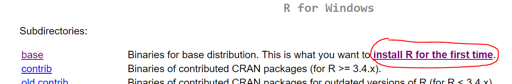
Y se descarga la última versión disponible.
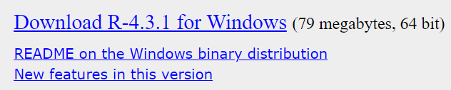
Es un archivo .exe, que una vez descargado hay que ejecutar para que se instale.
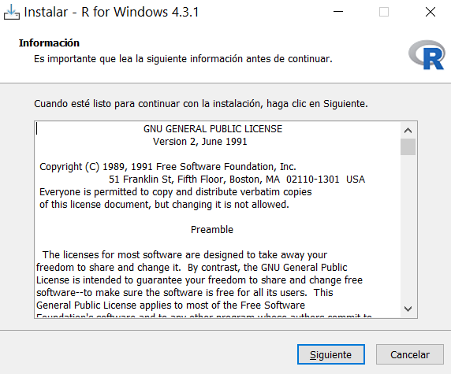
En todas las pantallas que aparezcan se selecciona el botón “Siguiente”.
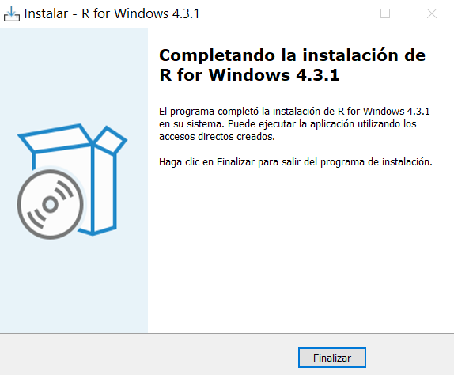
Una vez instalado R, se puede instalar RStudio Desktop desde posit.co.

En el caso de Windows, descargamos el archivo .exe de la última versión y lo ejecutamos.

Seleccionamos el botón “Siguiente” en todas las ventanas.
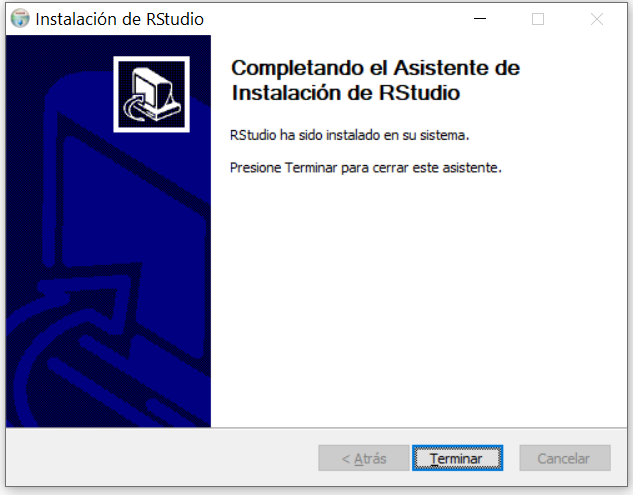
Existe la opción de utilizar RStudio de forma online sin instalarlo en nuestro ordenador, usando un navegador web. Se trata de Posit Cloud, que ofrece una suscripción gratuita con algunas limitaciones.
Sobre R existen recomendaciones de manuales y documentos de consulta en el propio sitio web del proyecto R:
Sobre RStudio se recomiendan las siguientes referencias:
Para ejecutar RStudio, localizamos su icono en el escritorio de nuestro ordenador. No confundir con el icono de R.
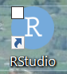
Al abrir RStudio aparece una ventana con diferentes secciones.

Debemos crear un nuevo proyecto desde el menú principal de la parte superior de la ventana:
File > New Project
Y aparece una ventana en la que elegiremos:
New Directory > New Project
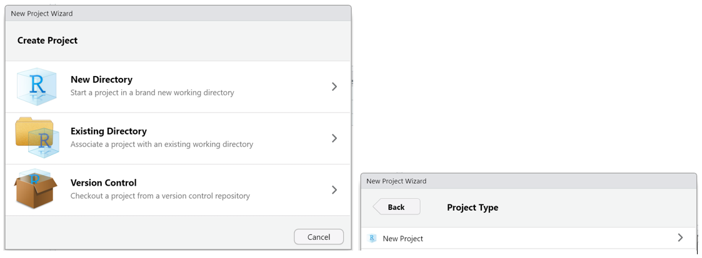
Al elegir esta opción, se nos pide el nombre del directorio (carpeta) del ordenador en el que queremos que se guarde el proyecto. Con el botón “Browse” podemos navegar por el explorador de archivos del ordenador hasta la carpeta que queramos usar para que se cree una subcarpeta para el proyecto.
Por ejemplo, podríamos crear el proyecto en una carpeta P1 para esta práctica, dentro de la carpeta Estadística:
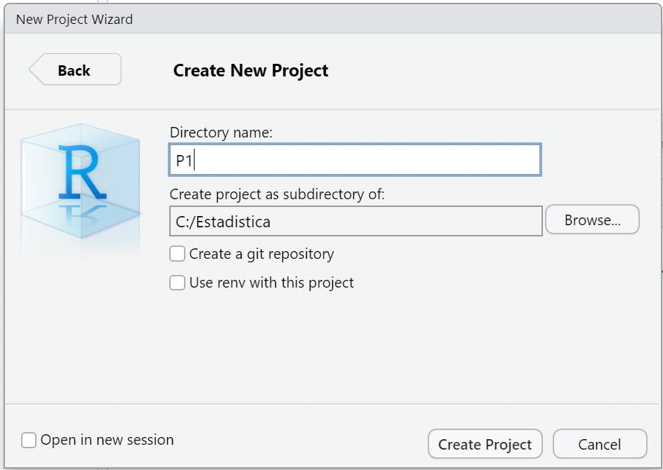
Si la carpeta Estadística no existe en el disco, se crea en el momento de seleccionar el botón “Create Project”. Y aparece en entorno de trabajo de RStudio.

Pueden verse tres secciones:
34+62 y vemos que nos responde con el resultado de la suma.36 + 62[1] 98Si queremos limpiar la consola, podemos seleccionar el icono con forma de brocha o cepillo.

En las prácticas no escribiremos comando u órdenes en lenguaje R directamente en la consola, sino que crearemos previamente un archivo de texto en el que escribiremos las órdenes, una en cada línea, así podemos guardar el trabajo en dicho archivo y recuperarlo en siguientes sesiones.
Para crear un archivo hay que seleccionar:
File > New File > R Script
Al hacerlo, lo que ocurre es que se crea una nueva sección encima de la consola, que es un editor de texto, en el que se abre el archivo recién creado, cuyo nombre inicial es “Untitled1”.
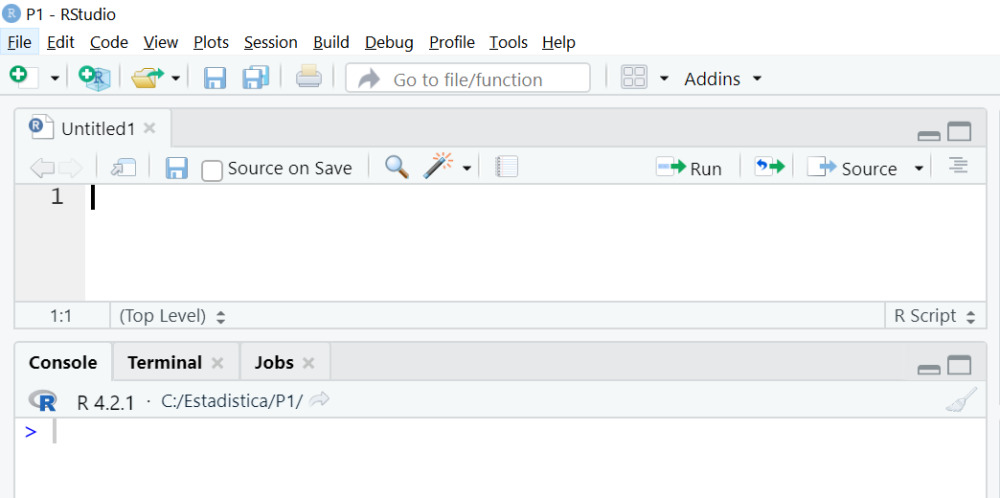
Para guardar este archivo de texto en la carpeta (directorio) del proyecto hay que seleccionar:
File > Save
Y se nos pide el nombre para el archivo, y escribimos por ejemplo P1.R. Los archivos de comandos en lenguaje R, deben tener como extensión .R al final del nombre.

Al hacer esto, en el editor ahora aparece el nombre del archivo. Y el propio archivo podemos verlo en la ventana File del proyecto.

Ya estamos en condiciones de empezar a escribir comandos R en el archivo de texto, uno por cada línea, por ejemplo, podemos escribir estas dos líneas:
34 + 62[1] 965^2[1] 25En la primera línea hemos escrito un comando, orden o instrucción para sumar dos números y en la segunda para elevar el número 5 al cuadrado.
Para ejecutar cada línea hay que posicionar el cursor en esa línea y pulsar Ctrl+Intro en el teclado, o bien el botón Run que aparece en la parte superior derecha del editor. Y el resultado de la ejecución de esa línea debe aparecer en la consola. Si queremos ejecutar de una sola vez varias líneas del archivo de texto, debemos seleccionar todas, y pulsar Ctrl+Intro o bien el botón Run.

Como se puede observar, delante de cada resultado aparece un número [1], que de momento podemos ignorar, pues será útil cuando los resultados de un mismo comando ocupen más de una línea, para poder identificar cada una de ellas.
Como en cualquier otro lenguaje de programación como Python, Java, C, JavaScript, etc., en R también se pueden crear variables, y usar operadores y funciones.
Las variables son contenedores de valores. A una variable le podemos asignar un valor, y en aquellos comandos en los que se use la variable, cuando se ejecute será sustituida por su valor.
Para asignar un valor a una variable podemos hacerlo de dos formas, con el operador <- o con el operador =. En esta práctica y en las siguientes usaremos siempre el operador =.
Por ejemplo, podemos crear una variable edad y asignarle un valor 12.
edad = 12O bien:
edad <- 12Y después usarla en una expresión como:
edad + 100[1] 112Para ejecutar estas órdenes desde el archivo de texto “P1.R”, se recuerda que hay que pulsar Ctrl+Intro en cada línea, y el resultado aparece en la consola.
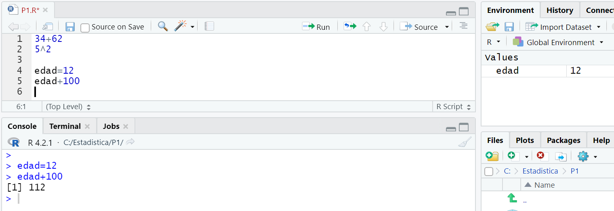
Cuando creamos variables en un proyecto, aparecen en la sección Environment.
Puede observarse que al asignar un valor a una variable con edad=12, no aparece el resultado en la consola. Si queremos ver el resultado de la asignación en la consola, hay que encerrar la expresión entre paréntesis ():
(edad=12)[1] 12
Puede apreciarse que en un caso en la consola no se indica el valor 12 y en el otro sí, aunque en ambos casos el resultado ha sido el mismo, es decir se ha creado la variable en el proyecto, aparece en Environment y se puede usar a partir de ahora en el proyecto.
precio = 34.99nombre = "juan perez"nombre = 'juan perez'
También se pueden variables que almacenen valores lógicos o booleanos, que pueden ser TRUE o FALSE:
respuesta = FALSE
Normalmente usamos nombres largos para las funciones, en ese caso se pueden usar símbolos como _ o . en el nombre de la función, o una notación “camelcase”, es decir poner en mayúscula la primera letra de cada palabra. Lo habitual en R es usar el separador .. Por ejemplo, algunos nombres válidos podrían ser:
totaldelafactura = 25.99
TotalDeLaFactura = 25.99
total_de_la_factura = 25.99
total.de.la.factura = 25.99Se pueden utilizar operadores de diferente tipo, como aritméticos y de comparación, entre otros.
| Operador | Nombre | Ejemplo |
|---|---|---|
| + | Suma | |
| - | Resta | |
| * | Multiplicación | |
| / | División | |
| %/% | División entera | |
| %% | Resto de un división | |
| ^ | Potencia | |
Con los operadores de comparación se obtiene un resultado TRUE o FALSE.
| Operador | Nombre | Ejemplo |
|---|---|---|
| == | Igual | |
| != | Desigual | |
| > | Mayor | |
| >= | Mayor o igual | |
| < | Menor | |
| <= | Menor o igual | |
Los comandos de R son similares a las órdenes, instrucciones o sentencias de otros lenguajes de programación.
Un grupo de comandos en un archivo .R se puede considerar un programa.
Los comandos se pueden separar con un salto de línea como ya hemos visto, pero también con punto y coma ;:
34+64; 5^2[1] 98[1] 25Los comandos se pueden agrupar encerrándolos entre llaves {}:
{x=34+62; y=5^2}; {x+y}[1] 121En un archivo .R se pueden incluir comentarios usando el símbolo #. Todo lo que haya a la derecha del símbolo se considera un comentario y no se ejecuta.
# Ejemplo de suma
34+62[1] 96100-20 #Ejemplo de resta[1] 80En los comandos se pueden usar funciones predefinidas (built-in) en el propio lenguaje o creadas por desarrolladores y disponibles en librerías que se pueden descargar de Internet.
Cuando se usa una función, el intérprete de R ejecuta las líneas de código que estableció el autor de la función. No necesitamos conocer dicho código, únicamente cuál es el objetivo de la función, los parámetros o argumentos que tenemos que pasar a la función y el tipo de resultado que debe devolver.
Por ejemplo, la función sqrt():
| Función | sqrt(x) |
| Objetivo de la función | Calcular la raíz cuadrada de un número |
| Parámetros o argumentos | x: número real del que se quiere calcular la raíz cuadrada |
| Resultado | La raíz cuadrada de x |
sqrt(25)[1] 5raiz.de.cincuenta = sqrt(50)
raiz.de.cincuenta[1] 7.071068Algunas funciones predefinidas para cálculos aritméticos son las siguientes:
| Función | Operación realizada | Ejemplo |
|---|---|---|
abs(x) |
Valor absoluto de x \[ |x| \] |
|
exp(x) |
Exponencial con base e \[ e^x \] |
|
log(x) |
Logaritmo neperiano (base e) de x \[ ln(x) \] |
|
log10(x) |
Logaritmo natural (base 10) de x \[ log(x) \] |
|
sqrt(x) |
Raíz cuadrada de x \[ \sqrt(x) \] |
|
factorial(x) |
Factorial de x \[ x! = 1·2·3·...·x \] |
|
choose(x,y) |
Número combinatorio \[ \binom{x}{y} = \frac{x!}{y!(x-y)!} \] |
|
ceiling(x) |
Primer número entero mayor o igual que x | |
floor(x) |
Primer número entero menor o igual que x | |
trunc(x) |
Parte entera de x | |
round(x, digits=n) |
Redondea x con n dígitos decimales | |
sin(x), cos(x), tan(x) |
Seno, coseno, tangente de x, con x expresado en radianes. Se puede usar la variable predefinida \(\pi\). | |
También existen funciones predefinidas para manejar texto (cadenas de caracteres o strings).
| Función | Operación realizada | Ejemplo |
|---|---|---|
toupper(x) |
Convierte a mayúsculas todas las letras del texto contenido en x | |
tolower(x) |
Convierte a minúsculas todas las letras del texto contenido en x | |
paste(x, y, sep=..) |
Concatena el texto de x e y, dejando como texto entre ambos lo que se indique en el parámetro sep | |
substr(x, start=.., stop=..) |
Extrae los caracteres de x desde la posición start hasta la posición stop | |
Existen algunas otras funciones predefinidas básicas que pueden ser útiles, como las siguientes:
| Función | Operación realizada | Ejemplo |
|---|---|---|
help(“funcion”) |
Muestra la ayuda sobre la función indicada | |
rm(x) |
Borra la variable x del proyecto | |
print(expresión) |
Imprime en la consola el resultado de la expresión. En general no es necesario usarla. El efecto es el mismo si se escribe sólo la expresión. | |
install.packages("paquete") |
Instala en nuestro ordenador el paquete de funciones llamado “paquete” | |
library(libreria) |
Activa, para poder usarse en el proyecto actual, el paquete indicado | |
detach(“package:paquete”) |
Desactiva el paquete en el proyecto actual y ya no se puede usar | |
remove.packages(“paquete”) |
Elimina de nuestro ordenador el paquete de funciones llamado “paquete” | |
getwd() |
Obtiene el directorio (carpeta) de trabajo del proyecto actual | |
setwd("directorio") |
Establece como directorio (carpeta) de trabajo el indicado como parámetro | |
source ("archivo.R") |
Ejecuta en el proyecto actual el código contenido en “archivo.R”. Si no se indica la ruta del archivo, se supone que está en el directorio de trabajo actual | |
options(scipen = dígitos) |
Establece que aquellos resultados que tengan un número de dígitos inferior al indicado, se representen con notación fija, y no con notación científica que utiliza un formato de un valor multiplicado por 10 elevado a un exponente. | |
Con las funciones install.package y luego library podemos importar librerías de funciones contenidas en paquetes públicos.
Existen miles de paquetes en r-project.org. Por ejemplo, se puede descargar el paquete toOrdinal.
Según su documentación, este paquete ofrece una función para hacer conversiones de números cardinales a ordinales.
install.packages("toOrdinal")A continuación, se ejecuta el comando library:
library(toOrdinal)Y ya se puede usar:
toOrdinal(55, language="English")
toOrdinal(55, language="Spanish")
toOrdinal(55, language="French")Si hemos instalado varios paquetes que tienen funciones con el mismo nombre, para diferenciarlas, se puede poner delante de la función el nombre del paquete librería seguido de ::. Por ejemplo:
toOrdinal::toOrdinal(55, language="English")El comando contrario a library, que sirve para eliminar un paquete del proyecto actual es detach:
detach("package:toOrdinal")Y el contrario a install.packages, para eliminar un paquete del ordenador es remove.packages:
remove.packages("toOrdinal")Podemos crear nuestras propias funciones, para después usarlas en el proyecto en el que estemos trabajando, o en otros proyectos.
nombre = function(parámetros) {
Contenido de la función
}Por ejemplo, podemos crear una función para sumar dos números.
sumar = function(x,y) {
return(x+y)
}Las funciones que hemos creado en el proyecto aparecen en la sección Environment > Functions.
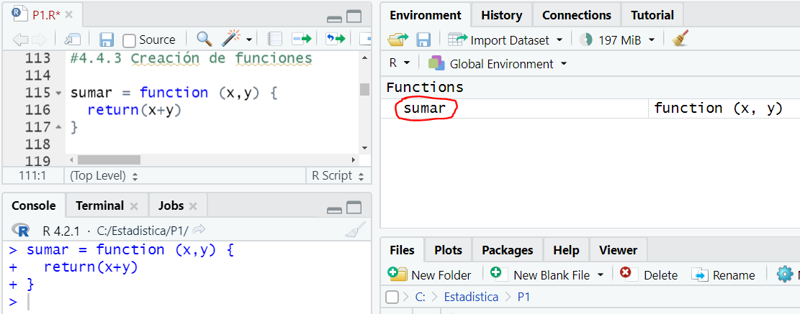
A partir de ahora podemos usar nuestra función de la forma habitual. Algunos ejemplos de uso pueden ser:
sumar(4,5)[1] 9a=10
sumar(30,a)[1] 40z=4*sumar(5,5)
z[1] 40Si queremos compartir nuestra función con otros desarrolladores, podemos guardar su código en un archivo .R y enviarlo a los posibles interesados, para que lo incorporen a su proyecto usando la función source(“archivo.R”).
Los vectores son colecciones ordenadas de números, caracteres o valores lógicos. Se crean mediante la función predefinida c().
Por ejemplo, podemos crear las siguientes variables de tipo vector:
ejemplo = c(34.6, 100, 67.2, 55, -8.4, 0, 0.5)
personas = c("Ana", "Juan", "Elena")
respuestas = c(TRUE, FALSE, FALSE)Para ver su valor escribimos el nombre de la variable en la consola:
ejemplo[1] 34.6 100.0 67.2 55.0 -8.4 0.0 0.5personas[1] "Ana" "Juan" "Elena"respuestas[1] TRUE FALSE FALSEAlgunos operadores y funciones para usar con vectores son los siguientes:
| Operador o función | Operación realizada | Ejemplos |
|---|---|---|
v = c(n1,n2,n3) |
Crea un vector con los elementos n1, n2, n3 |
|
inicio:fin |
Crea un vector como secuencia de número comenzando por inicio hasta fin y sumando una unidad para obtener el siguiente elemento del vector. Se puede comenzar con un número decimal |
|
sample(inicio:fin, n) |
Crea un vector de n números elegidos aleatoriamente entre los valores inicio y fin. Se puede añadir el parámetro replace=TRUE para indicar que se admiten números repetidos |
|
v[i] |
Obtiene el valor del elemento que ocupa la posición i en el vector v |
|
v[c(i,j,k)] |
Obtiene un vector con los elementos del vector v que están en las posiciones i, j y k |
|
v[c(-i,-j,-k)] |
Obtiene un vector con todos los elementos del vector v menos los que están en las posiciones i, j y k |
|
v[i]=valor |
Modifica el elemento de la posición i del vector v por el valor indicado |
|
v[condición] |
Obtiene un vector con los datos del vector v que cumplen la condición |
|
length(v) |
Obtiene la longitud o número de elementos del vector v |
|
min(v) |
Obtiene el elemento del vector v con el menor valor |
|
max(v) |
Obtiene el elemento del vector v con el mayor valor |
|
sort(v) |
Obtiene un vector que es el vector v ordenado de menos a mayor. No modifica el contenido del vector v |
|
sum(v) |
Obtiene la suma de todos los elementos del vector v |
|
prod(v) |
Obtiene el producto de todos los elementos del vector v |
|
cumsum(v) |
Obtiene un vector en el que cada elemento es la suma acumulada hasta ese elemento en el vector v |
|
cumprod(v) |
Obtiene un vector en el que cada elemento es el producto acumulado hasta ese elemento en el vector v |
|
cummin(v) |
Obtiene un vector en el que cada elemento es el mínimo de los elementos hasta ese elemento en el vector v |
|
cummax(v) |
Obtiene un vector en el que cada elemento es el máximo de los elementos hasta ese elemento en el vector v |
|
diff(v) |
Obtiene un vector en el que cada elemento es la diferencia entre un elemento del vector v y el elemento anterior a aquel |
|
rep(v, each=n) |
Obtiene un vector que es como el vector v pero repitiendo n veces casa uno de sus elementos |
|
rep(v, times=n) |
Obtiene un vector que es como el vector v pero repitiendo su contenido n |
|
rep(v, times=c(i,j,k)) |
Obtiene un vector que es como el vector v pero repitiendo su primer elemento i veces, el segundo j veces y el tercero k veces |
|
seq(from=n, to=m, by=s) |
Obtiene un vector con un elemento inicial n hasta un elemento final m incrementando cada uno un valor s |
|
unique(v) |
Obtiene un vector como v pero dejando sólo una vez los elementos repetidos |
|
match(v1,v2) |
Obtiene un vector con las posiciones que los valores del vector v1 ocupan en el vector v2 |
|
tabulate(v) |
Obtiene un vector en el que cada valor indica el número de veces que aparece cada elemento diferente del vector v |
|
sample(v, n, replace=FALSE, prob=NULL) |
Obtiene un vector con una muestra aleatoria con n valores del vector v, con o sin reemplazamiento |
|
Cuando se realizan operaciones aritméticas con vectores, estas operaciones se realizan elemento a elemento, como puede comprobarse en los siguientes ejemplos:
x=c(10,20,30,40)
y=c(1,2,3,4)
2*x[1] 20 40 60 80x-10[1] 0 10 20 30x^2[1] 100 400 900 1600x+y[1] 11 22 33 44x-y[1] 9 18 27 36x*y[1] 10 40 90 160x/y[1] 10 10 10 10En el caso de vectores de caracteres se puede usar la función paste() para combinar los elementos:
nombres=c("Juan", "Ana")
apellidos=c("Perez", "Garcia")
paste(nombres,apellidos)[1] "Juan Perez" "Ana Garcia"paste(nombres,apellidos,sep=",")[1] "Juan,Perez" "Ana,Garcia"También se pueden usar números, que se transforman a caracteres:
paste(nombres, c(100,200))[1] "Juan 100" "Ana 200" Las tablas son estructuras de datos con filas y columnas, en las que cada columna tiene un título o cabecera, y todos los elementos de una misma columna son del mismo tipo. Cada columna se trata como un vector.
Una tabla puede crearse con la función predefinida data.frame. Para crear un data.frame en R se utiliza la siguiente sintaxis:
tabla = data.frame (
columna1 = vector1,
columna2 = vector2,
columna3 = vector3
)Un ejemplo podría ser:
personas = data.frame (
nombre = c("Juan", "Ana", "Elena", "Jose"),
apellido = c("Perez", "Garcia", "Lopez", "Garcia"),
edad = c(25,33,30,25)
)Si visualizamos en la consola el valor de la variable personas:
personas nombre apellido edad
1 Juan Perez 25
2 Ana Garcia 33
3 Elena Lopez 30
4 Jose Garcia 25Se puede mostrar la tabla en RStudio con un formato más amigable usando la función View:
View(personas)
Las columnas son realmente vectores, y se pueden obtener todos los datos de una columna de tres formas:
$ y el nombre de la columna.años=personas$edad
años[1] 25 33 30 25[[ ]].años=personas[["edad"]]
años[1] 25 33 30 25[ ].años=personas[3]
años edad
1 25
2 33
3 30
4 25En este tercer caso en la consola se muestra de otra forma, pero es un vector como en los casos anteriores.
NOTA: Es posible crear tablas usando la función data.table(), pero para ello hay que instalar el paquete data.table. Ambas funciones son similares, aunque data.table tiene algunas ventajas como la velocidad al procesar grandes volúmenes de datos. Para comenzar a trabajar con R, se suele recomendar primero usar data.frame.
Se puede acceder a una fila de una tabla con tabla[fila,]:
personas[2,] nombre apellido edad
2 Ana Garcia 33O a una celda, indicando fila y columna con tabla[fila,columna]:
personas[2,3][1] 33A partir de una tabla se puede obtener otra sólo con las filas que cumplan una condición con tabla[condición]. Por ejemplo, con las personas que se apelliden “Garcia”:
personas.garcia = personas[personas$apellido=="Garcia",]
personas.garcia nombre apellido edad
2 Ana Garcia 33
4 Jose Garcia 25O por ejemplo con las personas que tengan más de 26 años:
mayores = personas[personas$edad>26,]
mayores nombre apellido edad
2 Ana Garcia 33
3 Elena Lopez 30La condición se puede utilizar para obtener una muestra aleatoria de filas de la tabla, usando la función sample:
muestra=personas[sample(nrow(personas), size=2),]
muestra nombre apellido edad
1 Juan Perez 25
4 Jose Garcia 25Se puede modificar el valor de un dato en una tabla identificando su fila y columna con tabla[fila,columna]:
personas nombre apellido edad
1 Juan Perez 25
2 Ana Garcia 33
3 Elena Lopez 30
4 Jose Garcia 25personas[2,3]=34
personas nombre apellido edad
1 Juan Perez 25
2 Ana Garcia 34
3 Elena Lopez 30
4 Jose Garcia 25Se puede modificar una fila completa, mediante la notación tabla[fila,]=list(valores):
personas[1,]=list("Pedro","Herrero",20)
personas nombre apellido edad
1 Pedro Herrero 20
2 Ana Garcia 34
3 Elena Lopez 30
4 Jose Garcia 25Se puede eliminar una fila mediante la notación tabla[-fila,]:
personas=personas[-2,]
personas nombre apellido edad
1 Pedro Herrero 20
3 Elena Lopez 30
4 Jose Garcia 25Se puede añadir una nueva fila al final de un tabla usando la función rbind():
personas=rbind(personas,list("María","Gutierrez", 40))
personas nombre apellido edad
1 Pedro Herrero 20
3 Elena Lopez 30
4 Jose Garcia 25
11 María Gutierrez 40Se puede eliminar una columna de una tabla usando la notación tabla[,-columna]:
personas = personas[,-3]
personas nombre apellido
1 Pedro Herrero
3 Elena Lopez
4 Jose Garcia
11 María GutierrezSe puede añadir una nueva columna a la derecha de la tabla usando la función cbind():
nota=c(6,10,5,9)
personas=cbind(personas,nota)
personas nombre apellido nota
1 Pedro Herrero 6
3 Elena Lopez 10
4 Jose Garcia 5
11 María Gutierrez 9Cuando se utiliza R para realizar cálculos estadísticos, se suelen leer los datos desde el archivo en el que estén almacenados. Uno de los formatos que más se utiliza es CSV (Comma Separated Values). Un archivo csv puede generarse desde un programa de edición de hojas de cálculo, como Excel, LibreOffice, o Google Sheets.
En los siguientes sitios web podemos encontrar miles de archivos csv con datos reales:
En estas prácticas se usarán sólo archivos .csv.
Para leer el contenido de un archivo .csv y almacenarlo en una tabla de tipo data.frame se utiliza la función read.csv2().
tabla = read.csv2(“archivo.csv”)Esta función considera que, en el archivo, las columnas se separan con ; y los números con parte decimal usan el carácter , como separador. Si usáramos un archivo de datos generado en un ordenador configurado para idioma inglés, habría que utilizar la función read.csv(), que considera que las columnas están separadas por , y el separado de decimales usado en el archivo es ..
NOTA: Aunque en el archivo de datos el separador decimal sea ,, una vez leídos los datos y cargados en la variable del proyecto de R, hay que usar en los comandos R el separador ., como se ha hecho en los apartados anteriores.
Para probar con un archivo de ejemplo, vamos a descargar el archivo futbol.csv que contiene datos sobre equipos de fútbol.
El archivo descargado hay que guardarlo en la carpeta del nuestro proyecto P1 de RStudio. Para recordar cuál es nuestra carpeta o directorio de trabajo (working directory) se puede usar la función getwd() de R.
getwd()[1] "/Users/adminadmin/projects/interactiveStatisticsWebsite"Cada uno habrá obtenido la ubicación de su proyecto, y es en esa carpeta donde hay que guardar el archivo descargado, que debe aparecer en la sección Files de RStudio, donde una vez que lo tenemos en el espacio de trabajo, podemos cargar los datos en una variable usando la función data.frame.
datos=read.csv2("futbol.csv")
datos PRESUPUESTO VICTORIAS GOLES
1 34.6 8 34
2 37.1 7 34
3 37.6 9 46
4 41.0 11 36
5 42.0 9 36
6 42.7 6 29
7 46.6 11 37
8 49.4 5 34
9 52.6 9 28
10 56.5 13 47
11 62.5 14 55
12 71.3 17 50
13 100.9 17 59
14 103.4 10 50
15 119.8 NA 46
16 145.2 15 60
17 185.8 24 53
18 NA 26 67
19 382.7 24 85
20 468.5 25 67Podemos comprobar que hay dos valores NA, porque esas celdas en el archivo estaban vacías, por no disponer de esos datos.
Para evitar problemas de procesamiento, podemos eliminar las filas de esos equipos, con la función na.omit.
datos=na.omit(datos)
datos PRESUPUESTO VICTORIAS GOLES
1 34.6 8 34
2 37.1 7 34
3 37.6 9 46
4 41.0 11 36
5 42.0 9 36
6 42.7 6 29
7 46.6 11 37
8 49.4 5 34
9 52.6 9 28
10 56.5 13 47
11 62.5 14 55
12 71.3 17 50
13 100.9 17 59
14 103.4 10 50
16 145.2 15 60
17 185.8 24 53
19 382.7 24 85
20 468.5 25 67Si queremos cargar en un vector el número de goles marcados por cada equipo, podemos hacerlo con:
goles=datos$GOLES
goles [1] 34 34 46 36 36 29 37 34 28 47 55 50 59 50 60 53 85 67Ahora podemos usar cualquiera de las funciones vistas en los apartados anteriores. Por ejemplo, podemos consultar el máximo número de goles marcados por un equipo, el mínimo, o sumar el total de goles marcados por todos los equipos.
max(goles)[1] 85min(goles)[1] 28sum(goles)[1] 840En las prácticas no vamos a generar archivos de datos, sólo procesar archivos ya existentes. No obstante, es algo sencillo que puede hacerse usando la función write.csv2.
Por ejemplo: supongamos que ha habido un error en los goles del equipo 10 y en lugar de 47 goles ha marcado 48.
Podemos modificar el data.frame así:
datos[10,3]=48
datos PRESUPUESTO VICTORIAS GOLES
1 34.6 8 34
2 37.1 7 34
3 37.6 9 46
4 41.0 11 36
5 42.0 9 36
6 42.7 6 29
7 46.6 11 37
8 49.4 5 34
9 52.6 9 28
10 56.5 13 48
11 62.5 14 55
12 71.3 17 50
13 100.9 17 59
14 103.4 10 50
16 145.2 15 60
17 185.8 24 53
19 382.7 24 85
20 468.5 25 67Y volver a guardar en el archivo con:
write.csv2(datos,"futbolcambiado.csv")Podemos comprobar en la sección Files de RStudio que aparece el nuevo archivo de datos en la carpeta de trabajo.
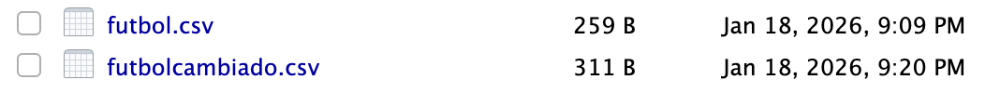
Si alguna vez queremos cambiar el directorio o carpeta de trabajo, podemos hacerlo con la función setwd:
setwd(".")Para ello, antes debemos crear la carpeta indicada en el ordenador, pues en otro caso avisará de que no existe.
También se puede cambiar el directorio de trabajo desde la sección Session > Set Working Directory de RStudio.
Con R se pueden generar gráficos, que aparecen en la sección Plots de RStudio.
La función plot(c(x1,x2,x3,..),c(y1,y,2,y3,..)) dibuja puntos en las coordenadas (x1,y1), (x2,y2), (x3,y3), ..
plot(c(2,-5,6,0), c(5,7,-3,0))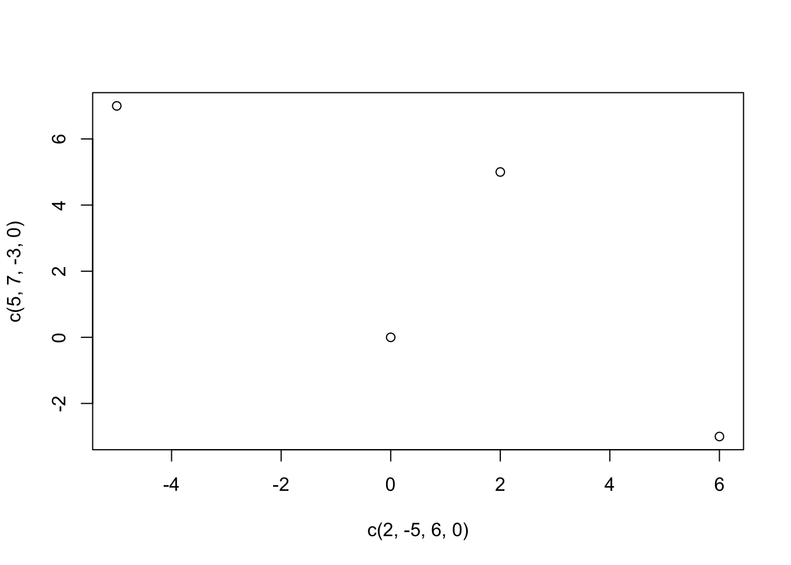
Se pueden usar variables para las coordenadas y un parámetro type para indicar el aspecto del gráfico.
type=”p”type=”b”type=”l”v1=c(2,-5,6,0)
v2=c(5,7,-3,0)
plot(v1,v2,type="b")plot (v1, v2, type="l")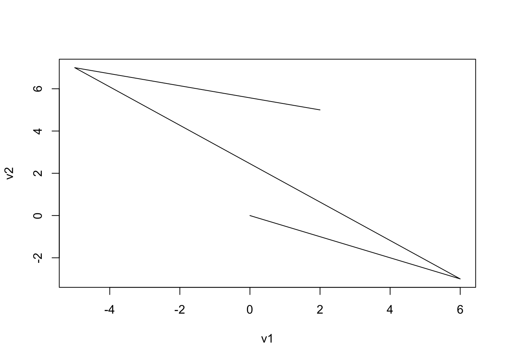
Se pueden manejar otros aspectos del gráfico, con los siguientes parámetros, ver ayuda en RStudio con help(”plot”):
main=”título”sub=”subtítulo”xlab=”etiqueta”ylab=”etiqueta”lwd=”número”col=”color” (ej. “red”, “blue”, “green”, etc., lista completa en enlace)xlim=c(mínimo,máximo)xlim=c(mínimo,máximo)lty=0,1,2,3,4,5,6
plot(v1,v2,type="b", main="Título del diagrama", sub="Subtítulo del diagrama", xlab="Etiqueta eje x", ylab="etiqueta eje y", col="red", lwd="3")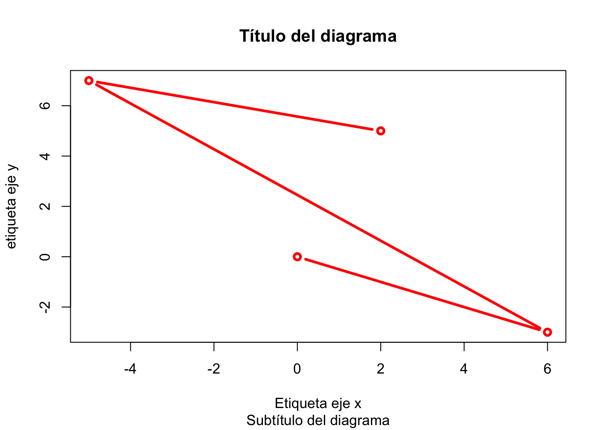
plot(v1, v2, type="l", xlim = c(-10,10), ylim=c(-5,15), lty=2)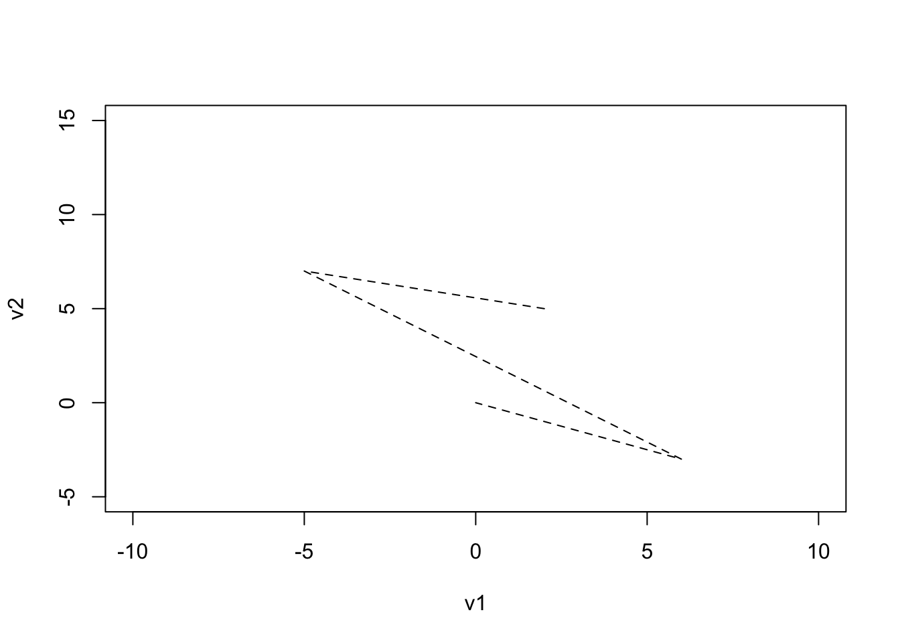
Se pueden dibujar funciones, si como segundo vector se pasa una función aplicada a los elementos del primer vector:
x=-10:10
plot(x, 3*x+2,type="l", main="Recta y=3x+2")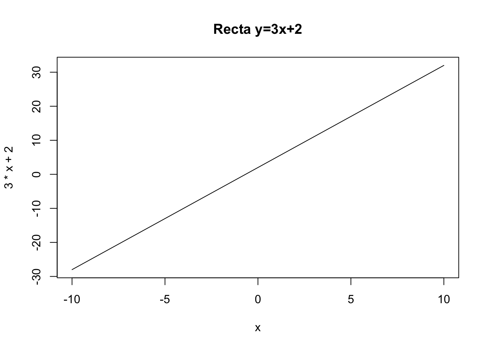
x=-10:10
plot(x, x^2, type="l", main="Parábola")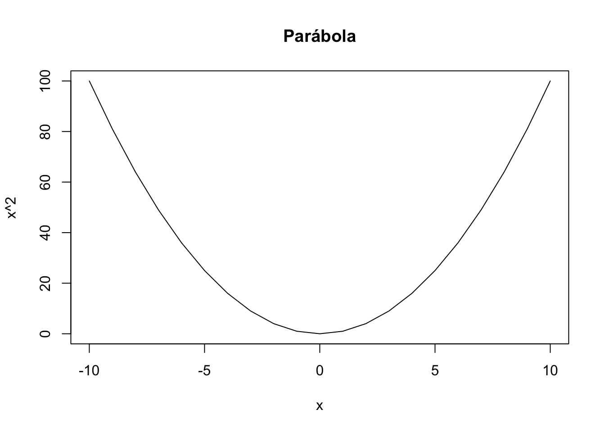
x=-10:10
plot(x,exp(x),type="l", main="Función exponencial")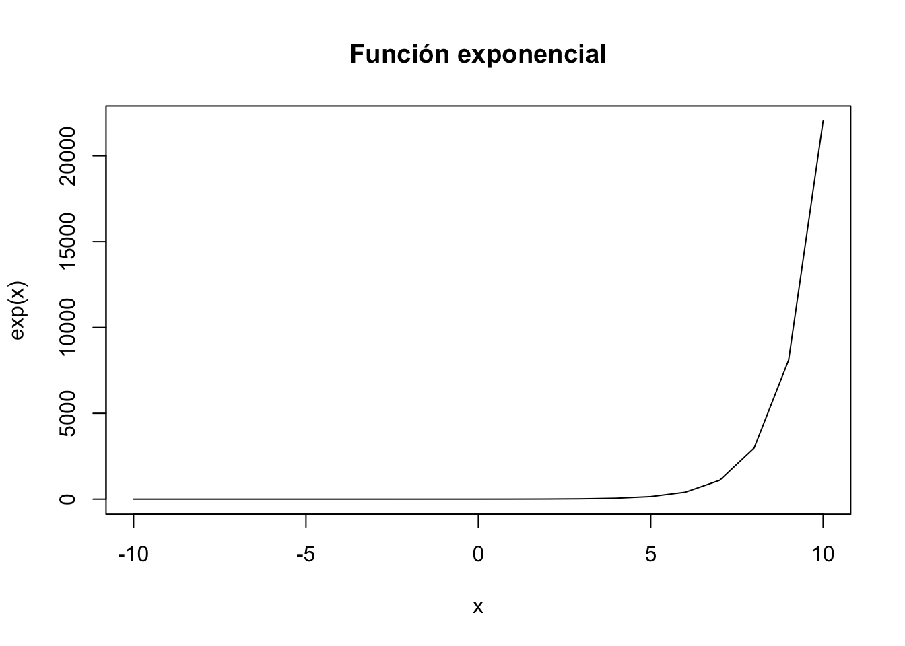
Se puede dibujar cualquier curva con la función curve(función(x), from=valor mínimo de x, to=valor máximo de x).
Ejemplo:
curve(x^2, from=-10, to=10)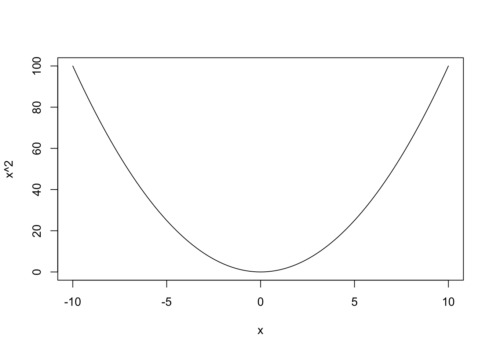
Se puede crear previamente la función usando function:
mi.funcion = function(x){x^2}
curve(mi.funcion,from=-10, to=10)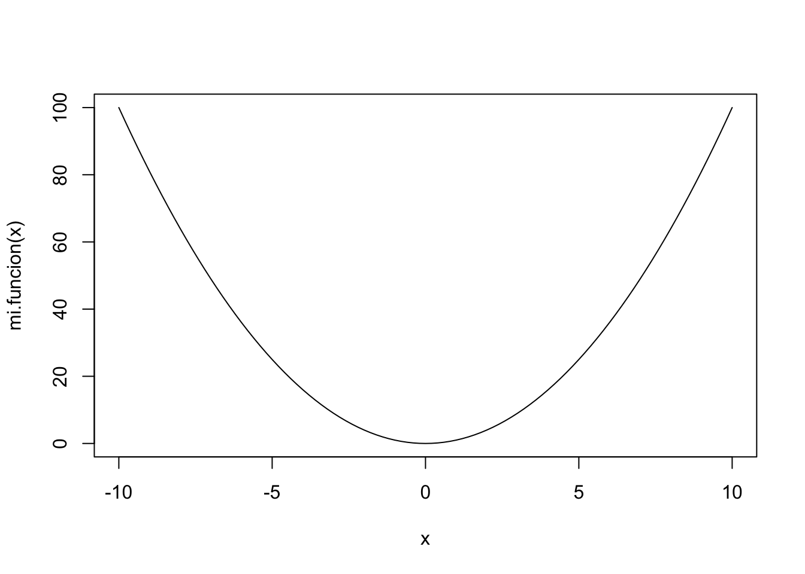
La función par(mfrow=c(filas,columnas) divide la ventana Plots en filas y columnas, y los gráficos se dibujan según esa división.
Para volver a tener una ventana para un solo gráfico hay que ejecutar: par(mfrow=c(1,1)).
Ejemplo:
par(mfrow=c(2,3))
x=-10:10
plot(x,3*x+2,type="l", main="Recta")
plot(x,x^2,type="l", main="Parábola")
plot(x,exp(x),type="l", main="Exponencial")
plot(x,log(x),type="l", main="Logaritmo neperiano")Warning in log(x): NaNs producedplot(x,abs(x),type="l", main="Absoluto")
plot(x,x^3,type="l", main="Función x^3")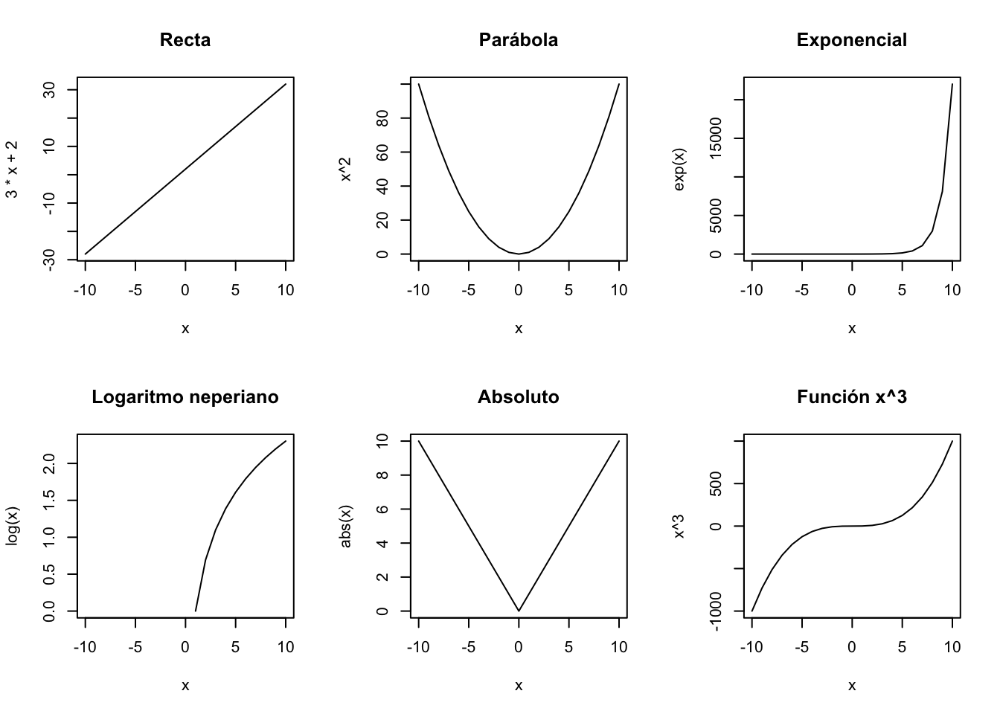
par(mfrow=c(1,1)) Plots de RStudio en dos partes y dibujar los siguientes diagramas, uno junto a otro:
plot().curve().